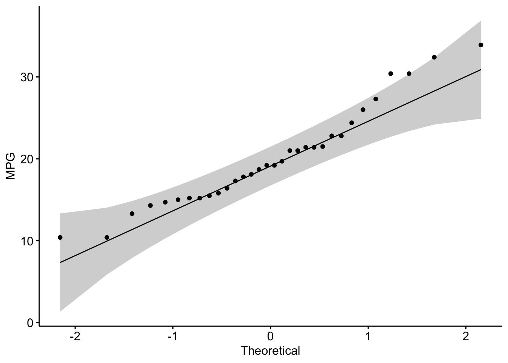
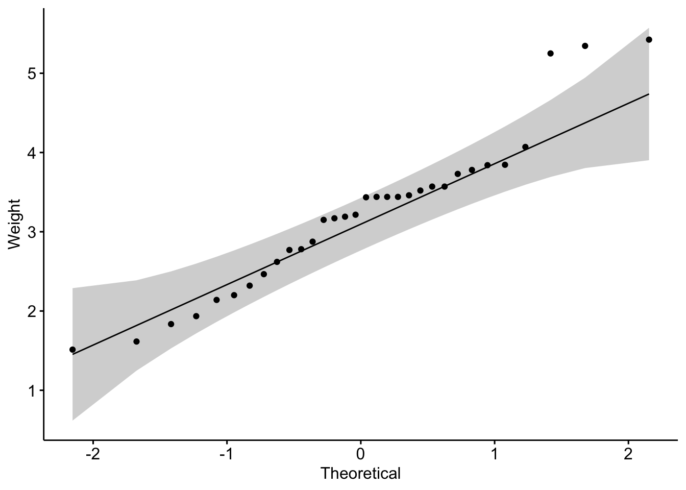
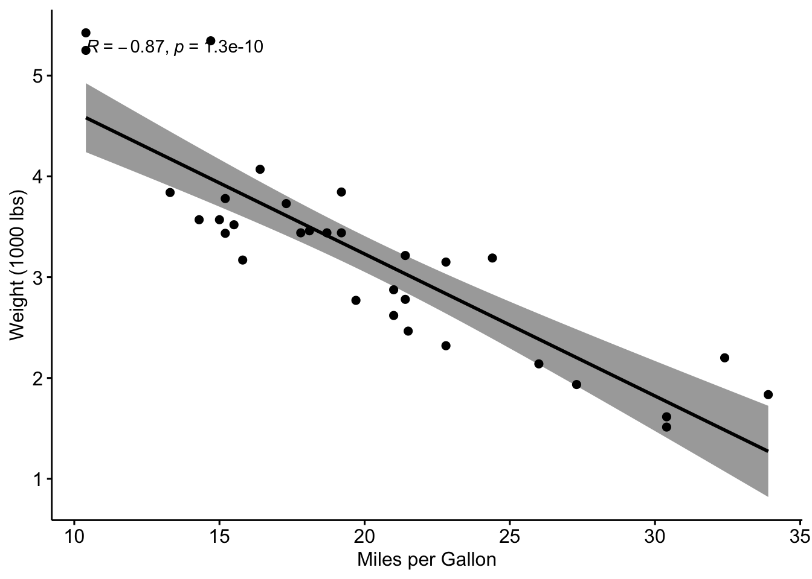
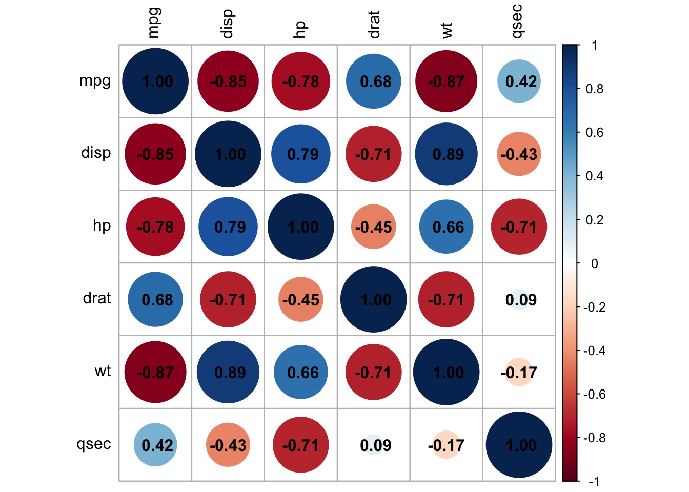

Last updated: 2024-09-10
Checks: 7 0
Knit directory: My_Project/
This reproducible R Markdown analysis was created with workflowr (version 1.7.1). The Checks tab describes the reproducibility checks that were applied when the results were created. The Past versions tab lists the development history.
Great! Since the R Markdown file has been committed to the Git repository, you know the exact version of the code that produced these results.
Great job! The global environment was empty. Objects defined in the global environment can affect the analysis in your R Markdown file in unknown ways. For reproduciblity it’s best to always run the code in an empty environment.
The command set.seed(20240905) was run prior to running
the code in the R Markdown file. Setting a seed ensures that any results
that rely on randomness, e.g. subsampling or permutations, are
reproducible.
Great job! Recording the operating system, R version, and package versions is critical for reproducibility.
Nice! There were no cached chunks for this analysis, so you can be confident that you successfully produced the results during this run.
Great job! Using relative paths to the files within your workflowr project makes it easier to run your code on other machines.
Great! You are using Git for version control. Tracking code development and connecting the code version to the results is critical for reproducibility.
The results in this page were generated with repository version 5e763e5. See the Past versions tab to see a history of the changes made to the R Markdown and HTML files.
Note that you need to be careful to ensure that all relevant files for
the analysis have been committed to Git prior to generating the results
(you can use wflow_publish or
wflow_git_commit). workflowr only checks the R Markdown
file, but you know if there are other scripts or data files that it
depends on. Below is the status of the Git repository when the results
were generated:
Ignored files:
Ignored: .Rhistory
Ignored: .Rproj.user/
Untracked files:
Untracked: .Rapp.history
Untracked: .gitignore
Untracked: Stats.Rmd
Untracked: Stats.html
Untracked: data/.DS_Store
Untracked: data/COADREAD.clin.merged.picked.txt
Untracked: data/COADREAD.rnaseqv2__illuminahiseq_rnaseqv2__unc_edu__Level_3__RSEM_genes_normalized__data.data.txt
Unstaged changes:
Modified: .DS_Store
Modified: analysis/.DS_Store
Deleted: myproject.zip
Note that any generated files, e.g. HTML, png, CSS, etc., are not included in this status report because it is ok for generated content to have uncommitted changes.
These are the previous versions of the repository in which changes were
made to the R Markdown (analysis/Untitled.Rmd) and HTML
(docs/Untitled.html) files. If you’ve configured a remote
Git repository (see ?wflow_git_remote), click on the
hyperlinks in the table below to view the files as they were in that
past version.
| File | Version | Author | Date | Message |
|---|---|---|---|---|
| Rmd | 5e763e5 | oliverdesousa | 2024-09-10 | Start my new project |
Correlation analysis is used to investigate the association between two or more variables.
Pearson Correlation measures the linear relationship between two continuous variables. It assumes both variables follow a normal distribution.
Spearman and Kendall Correlation are non-parametric and measure the strength and direction of the association between two ranked variables.
Before applying Pearson’s correlation, check the assumptions:
Null hypothesis: the data = normally distributed
Alternative hypothesis: the data = not normally distributed
If the p-value is less than 0.05, the null hypothesis is rejected
# Shapiro-Wilk test for normality
shapiro.test(mtcars$mpg)
Shapiro-Wilk normality test
data: mtcars$mpg
W = 0.94756, p-value = 0.1229shapiro.test(mtcars$wt)
Shapiro-Wilk normality test
data: mtcars$wt
W = 0.94326, p-value = 0.09265mpg: The p-value is 0.1229, which is greater than 0.05.
Therefore, we do not reject the null hypothesis. This suggests that the
mpg variable does not significantly deviate from a normal
distribution.
wt: The p-value is 0.09265, which is also greater than
0.05. Thus, we do not reject the null hypothesis. This indicates that
the wt variable does not significantly deviate from a normal
distribution.
library(ggpubr)Loading required package: ggplot2par(mfrow=c(1,2))
ggqqplot(mtcars$mpg, ylab = "MPG")
ggqqplot(mtcars$wt, ylab = "Weight")
Yes, form the plot above, the relationship is linear.
# Pearson correlation test
pearson_res <- cor.test(mtcars$mpg, mtcars$wt, method = "pearson")
pearson_res
Pearson's product-moment correlation
data: mtcars$mpg and mtcars$wt
t = -9.559, df = 30, p-value = 1.294e-10
alternative hypothesis: true correlation is not equal to 0
95 percent confidence interval:
-0.9338264 -0.7440872
sample estimates:
cor
-0.8676594 # Spearman correlation test
spearman_res <- cor.test(mtcars$mpg, mtcars$wt, method = "spearman")Warning in cor.test.default(mtcars$mpg, mtcars$wt, method = "spearman"): Cannot
compute exact p-value with tiesspearman_res
Spearman's rank correlation rho
data: mtcars$mpg and mtcars$wt
S = 10292, p-value = 1.488e-11
alternative hypothesis: true rho is not equal to 0
sample estimates:
rho
-0.886422 # Kendall correlation test
kendall_res <- cor.test(mtcars$mpg, mtcars$wt, method = "kendall")Warning in cor.test.default(mtcars$mpg, mtcars$wt, method = "kendall"): Cannot
compute exact p-value with tieskendall_res
Kendall's rank correlation tau
data: mtcars$mpg and mtcars$wt
z = -5.7981, p-value = 6.706e-09
alternative hypothesis: true tau is not equal to 0
sample estimates:
tau
-0.7278321 # Scatter plot with Pearson correlation
ggscatter(mtcars, x = "mpg", y = "wt",
add = "reg.line", conf.int = TRUE,
cor.coef = TRUE, cor.method = "pearson",
xlab = "Miles per Gallon", ylab = "Weight (1000 lbs)")
Correlation Coefficient:
-1: Strong negative correlation (as one variable
increases, the other decreases).
0: No correlation.
1: Strong positive correlation (both variables
increase together).
P-Value:
p-value < 0.05 indicates a statistically significant
correlation.Exercise:
Perform a correlation analysis using the mpg and
qsec variables from the mtcars to investigate
the extent of correlation between the two variables.
Use a method of your choosing.
Provide and interpretation of the correlation coefficient and its p-value.
The Pearson correlation coefficient is -0.8677, which points to a strong negative linear relationship between the variables.
The p-value is significantly low (p < 0.001), indicating that the correlation is statistically significant.
The 95% confidence interval suggests that the true correlation lies between -0.9338 and -0.7441.
The R function cor() can be used to compute a correlation matrix.
# We start by loading the mtcars dataset and selecting a subset of columns for our analysis.
data("mtcars")
my_data <- mtcars[, c(1, 3, 4, 5, 6, 7)]
# Display first few rows
head(my_data) mpg disp hp drat wt qsec
Mazda RX4 21.0 160 110 3.90 2.620 16.46
Mazda RX4 Wag 21.0 160 110 3.90 2.875 17.02
Datsun 710 22.8 108 93 3.85 2.320 18.61
Hornet 4 Drive 21.4 258 110 3.08 3.215 19.44
Hornet Sportabout 18.7 360 175 3.15 3.440 17.02
Valiant 18.1 225 105 2.76 3.460 20.22rescm <- cor(my_data)
# Round the results to 2 decimal places for easier interpretation
round(rescm, 2) mpg disp hp drat wt qsec
mpg 1.00 -0.85 -0.78 0.68 -0.87 0.42
disp -0.85 1.00 0.79 -0.71 0.89 -0.43
hp -0.78 0.79 1.00 -0.45 0.66 -0.71
drat 0.68 -0.71 -0.45 1.00 -0.71 0.09
wt -0.87 0.89 0.66 -0.71 1.00 -0.17
qsec 0.42 -0.43 -0.71 0.09 -0.17 1.00Interpretation: - Values close to 1 or -1 indicate strong positive or negative correlations, respectively.
library(corrplot)corrplot 0.94 loadedcorrplot(rescm,tl.col = "black", addCoef.col = "black")
sessionInfo()R version 4.4.1 (2024-06-14)
Platform: aarch64-apple-darwin20
Running under: macOS Sonoma 14.6.1
Matrix products: default
BLAS: /Library/Frameworks/R.framework/Versions/4.4-arm64/Resources/lib/libRblas.0.dylib
LAPACK: /Library/Frameworks/R.framework/Versions/4.4-arm64/Resources/lib/libRlapack.dylib; LAPACK version 3.12.0
locale:
[1] en_US.UTF-8/en_US.UTF-8/en_US.UTF-8/C/en_US.UTF-8/en_US.UTF-8
time zone: Africa/Johannesburg
tzcode source: internal
attached base packages:
[1] stats graphics grDevices utils datasets methods base
other attached packages:
[1] corrplot_0.94 ggpubr_0.6.0 ggplot2_3.5.1
loaded via a namespace (and not attached):
[1] sass_0.4.9 utf8_1.2.4 generics_0.1.3 tidyr_1.3.1
[5] rstatix_0.7.2 lattice_0.22-6 stringi_1.8.4 digest_0.6.37
[9] magrittr_2.0.3 evaluate_0.24.0 grid_4.4.1 fastmap_1.2.0
[13] Matrix_1.7-0 rprojroot_2.0.4 workflowr_1.7.1 jsonlite_1.8.8
[17] whisker_0.4.1 backports_1.5.0 promises_1.3.0 mgcv_1.9-1
[21] purrr_1.0.2 fansi_1.0.6 scales_1.3.0 jquerylib_0.1.4
[25] abind_1.4-5 cli_3.6.3 rlang_1.1.4 splines_4.4.1
[29] munsell_0.5.1 withr_3.0.1 cachem_1.1.0 yaml_2.3.10
[33] tools_4.4.1 ggsignif_0.6.4 dplyr_1.1.4 colorspace_2.1-1
[37] httpuv_1.6.15 broom_1.0.6 vctrs_0.6.5 R6_2.5.1
[41] lifecycle_1.0.4 git2r_0.33.0 stringr_1.5.1 car_3.1-2
[45] fs_1.6.4 pkgconfig_2.0.3 pillar_1.9.0 bslib_0.8.0
[49] later_1.3.2 gtable_0.3.5 glue_1.7.0 Rcpp_1.0.13
[53] highr_0.11 xfun_0.47 tibble_3.2.1 tidyselect_1.2.1
[57] rstudioapi_0.16.0 knitr_1.48 farver_2.1.2 nlme_3.1-166
[61] htmltools_0.5.8.1 labeling_0.4.3 carData_3.0-5 rmarkdown_2.28
[65] compiler_4.4.1